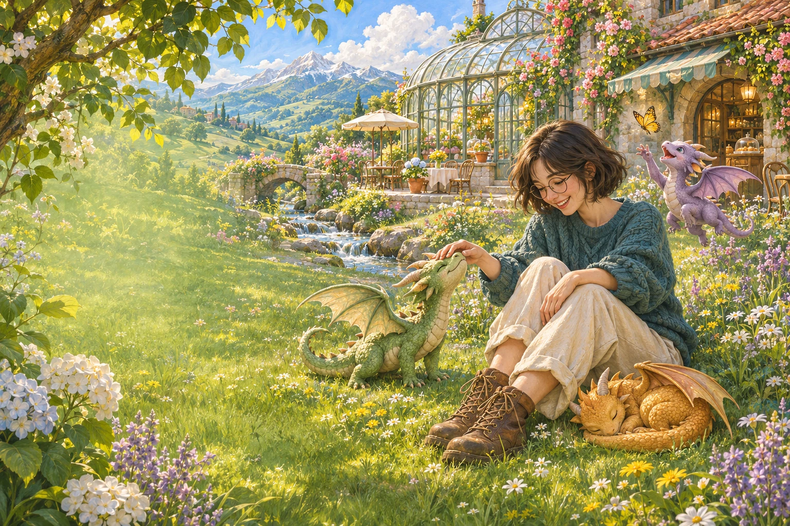

← Back to my desk
MANUSHREE’S LITTLE DAYDREAM
SOMEWHERE BETWEEN AN IDEA & A DAYDREAM
A little wonder.
A world of
possibilities.
01 / 04 · CURIOSITY
“I follow small sparks of curiosity. Sometimes they become an interface. Sometimes, a world with dragons.”
Turn a little thought
A QUIET CORNER OF MY IMAGINATIONNo deadlines here. Just possibilities.